Docker安装时会自动在host上创建三个网络，docker network ls命令查看
none网络
除了lo，其余都没有，可通过--network=none指定
docker run -it --network=none busybox
封闭意味着隔离，适用于安全性要求高且不需要联网的应用，比如生成随机密码
host网络
连接到host网络的容器共享Docker host的网络栈。可通过--network=host指定
最大的好处是性能，若容器对网络传输效率有较高要求，可以选择host网络。牺牲一些灵活性，Docker host上使用过的端口不能再用。
另一个用途是让容器可以直接配置host网路。
bridge网络
docker容器默认的网络
安装bridge-utils工具包
yum -y install bridge-utils
yum -y install initscripts
brctl show //当前host的网络结构
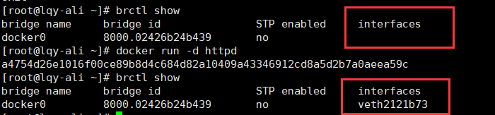
veth2121b73即新创建容器的虚拟网卡。容器中会存在对应的网卡。容器网卡和veth2121b73是一对veth pair。veth pair是一种成对出现的特殊网络设备，可以想象成一根虚拟网线连接起来的一对网卡，一头在容器中，另一头veth2121b73挂网桥docker0上，其效果就是将容器网卡也挂在了docker0上。docker network inspect bridge
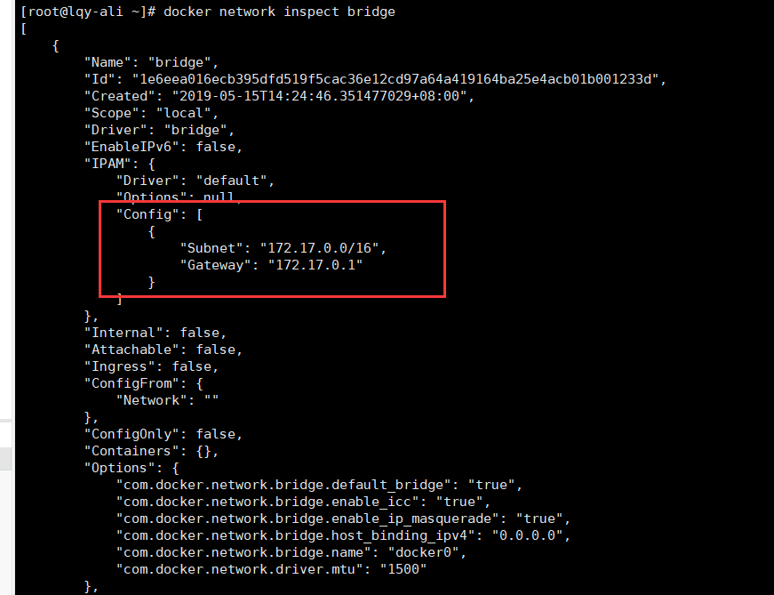
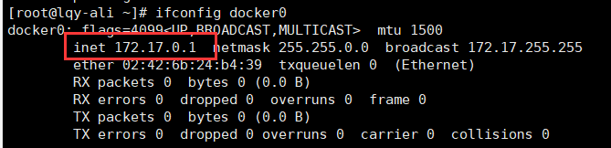
网关就是docker0
容器创建时，docker会自动从172.17.0.0/16中分配一个IP。
user-defined网络
根据业务需要自主创建user-defined网络
Docker提供三种user-defined网络驱动：bridge、创建跨主机的网络(overlay和macvlan)。
通过bridge驱动创建bridge网络
docker network create --driver bridge my_net
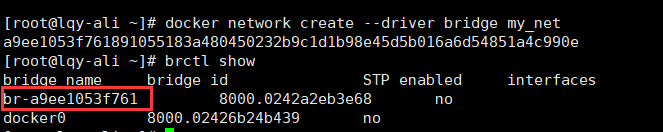
新增一个网桥br-a9ee1053f761，a9ee1053f761正好是新建bridge网络my_net短ID
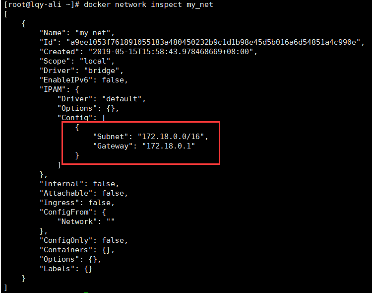
指定IP网段
--subnet和--gateway参数
docker network create --driver bridge --subnet 172.22.16.0/24 --gateway 172.22.16.1 my_net2
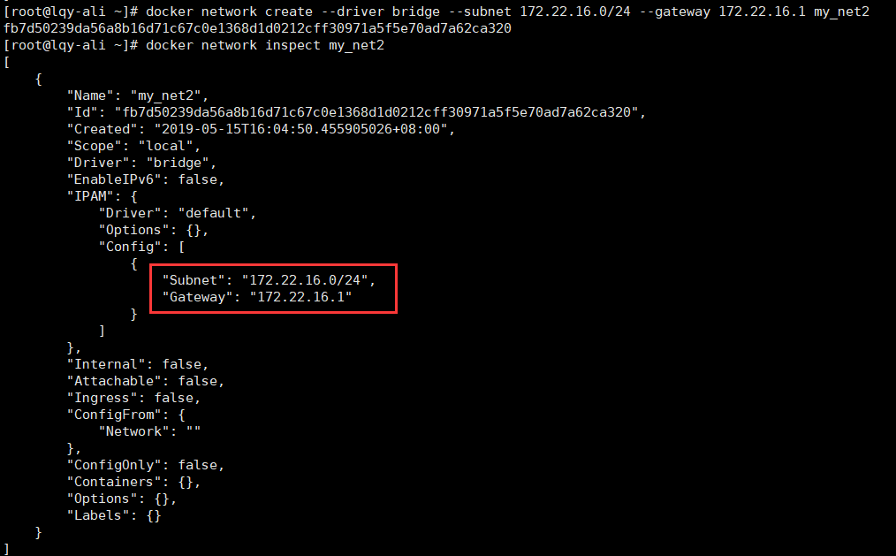
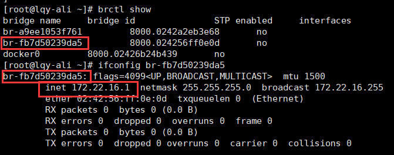
容器要使用新的网络，需要启动时通过--network指定
docker run -it --network=my_net2 busybox
指定静态IP(只有使用--subnet创建的网络才能指定静态IP)
目前为止容器的IP都是docker自动从subnet中分配
docker run -it --network=my_net2 --ip 172.22.16.8 busybox
两个busybox容器都挂在my_net2上，同一网络中的容器、网关之间网络互通
两个网络属于不同的网络，无法通信。
不同的网络加上路由可以通信。
host上对每个都有一条路由，同时操作系统上打开了ip forwarding，host就成了路由器，挂载在不同网桥上的网络就能够相互通信。
检查
ip r //查看host上的路由表
查看ip forwarding是否启用
[root@lqy-ali ~]# sysctl net.ipv4.ip_forward
net.ipv4.ip_forward = 1 //已启用
原因
iptables-save
iptables DROP掉不同网桥之间的双向流量
从规则命名DOCKER-ISOLATION可知docker在设计上就要隔离不同的network
如何才让不同网络通信
为httpd容器添加一块net_my2网卡，通过docker network connect（将现有容器加入指定网络）实现
docker network connect my_net2 httpd容器短ID
之后就可以访问了 。
容器间通信
容器之间可通过IP、Docker DNS Server或joined容器三种方式通信
IP通信
两个容器要通信，必须要有属于同一个网络的网卡。
缺点：
不够灵活，部署应用之前可能无法确定IP，部署之后再指定要访问IP，较麻烦
具体做法：
容器创建时通过--network指定相应网络，或通过docker network connect将现有容器加入指定网络。
Docker DNS Server
Docker 1.10版本后，docker daemon（服务端）实现了内嵌DNS server，使容器可以直接通过容器名通信。
具体做法：
启动时用--name为容器命名
docker run -it --network=my_net2 --name=bbox1 busybox
docker run -it --network=my_net2 --name=bbox2 busybox
在bbox2容器中能ping到bbox1.
限制
只能在user-defined网络使用，默认的bridge网络无法使用DNS
joined容器
非常特别，可以使两个或多个容器共享一个网络栈，共享网卡和配置信息，joined容器之间可通过127.0.0.1直接通信。
测试：
docker run -d -it --name=web1 httpd
指定joined容器为web1
docker run -it --network=container:web1 busybox
busybox和web1的网卡mac地址与IP完全一样，它们共享了相同的网络栈。busybox直接可以用127.0.0.1访问web1的http服务。
适用场景：
1.不同容器中的程序希望通过loopback高效快速地通信，比如Web Server与App Server
2.希望监控其他容器的网络流量，比如运行在独立容器中的网络监控程序。
将容器与外部世界连接
容器访问外部世界
容器默认能访问外网，这里的外网指容器网络以外的网络环境，并非特指Intenet.
当busybox从容器向外ping时，数据包是如何到达bing.com
关键是NAT
查看docker host上的iptables规则
iptables -t nat -S
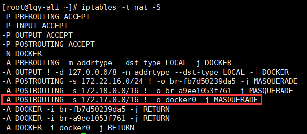
含义：如果网桥docker0收到来自172.17.0.0/16网段的外出包，把它交给MASQUERADE处理，即将包的源地址替换成host地址发送出去，做了一次网路地址转换（NAT）
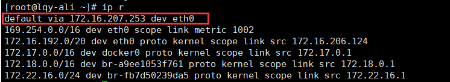
默认路由通过eth0发出，需要监控eth0和docker0
当busybox ping bing.com时，tcpdump输出如下
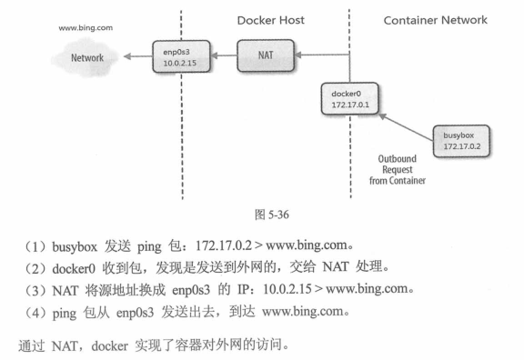
外部世界访问容器
端口映射
docker可将容器对外提供服务的端口映射到host的某端口，外网通过该端口访问容器。
-p参数映射端口
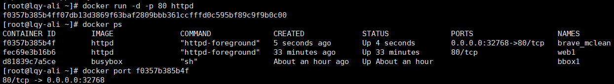
指定端口映射
docker run -d -p 8080:80 httpd
每个映射的端口，host都会启动一个docker-proxy进程来处理访问容器的流量
ps -ef|grep docker-proxy
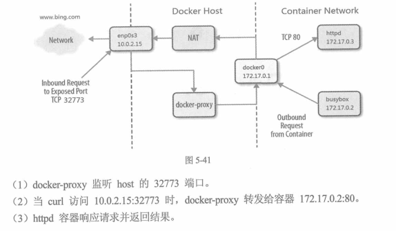